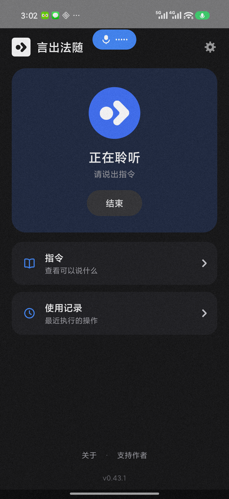
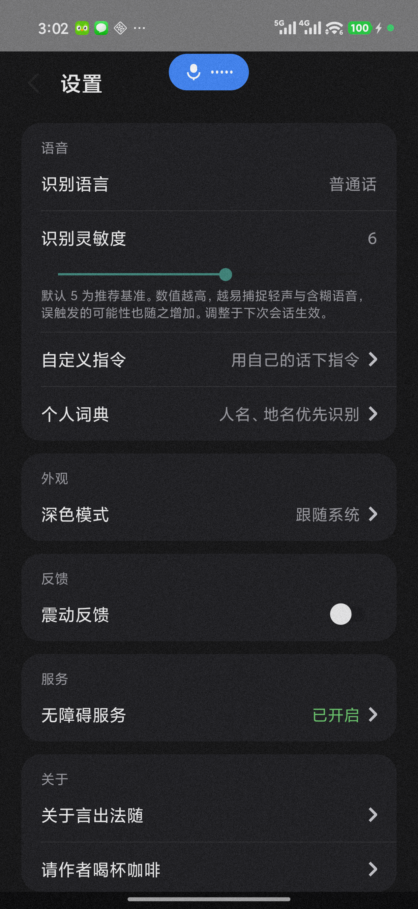

说出指令，手机执行。
为无法精细触屏的用户，把操作权交还给声音。
SMA 等肢体障碍用户无法触屏操作手机，而「打不了字」与「点不了屏幕」之间，隔着一整个数字生活。与此同时，国产安卓阵营几乎没有任何厂商投入系统级的语音控制。
言出法随用「无障碍服务 + 离线语音识别」把操作权交还给声音：无需联网、无需专用硬件、无需电脑常伴——一部普通安卓手机，说话即可完成滑动、点击、输入等几乎全部操作。
| 你说 | 手机做 |
|---|---|
| 「显示编号」 | 可点击元素全部标注数字 |
| 「点击 18」 | 点击编号 18 对应的元素 |
| 「向上滑动」 | 内容向上滚动一页 |
| 「输入」→「今天天气不错」 | 文字填入输入框 |
| 「把不错替换成很好」 | 输入框中的「不错」被替换为「很好」 |
| 「增加音量」 | 音量加一格（80% 封顶，防失控） |
| 「退出」 | 结束会话，麦克风归还系统 |
完整指令表见仓库 README 与应用内「指令说明」。
语音控制最怕两件事：麦克风失控、误触发连环执行。言出法随的安全机制是产品设计的一部分，不是补丁：


完整流水账见仓库 CHANGELOG.md。
最新安装包（含离线识别模型，约 285MB）：GitHub Releases
要求 Android 7.0 及以上。安装后按应用内引导开启无障碍服务即可。
黄信豪（Hugo），SMA 患者开发者。言出法随的第一位用户就是他自己——这个项目的每一个功能，都来自真实的使用需求。
如果这个项目对你有帮助，欢迎在 爱发电 支持作者。